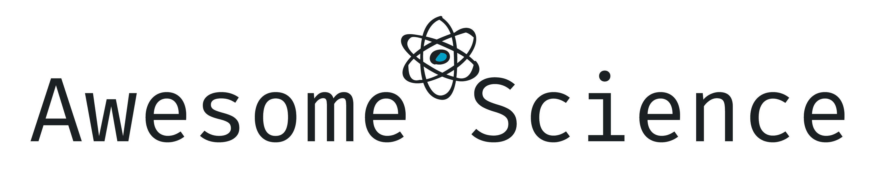

Awesome Science

A currated list of awesome scientific software, libraries and services.
Inspired by awesome-lists.
MOOCs
Massive open online courses.
- Coursera - MOOC founded by Stanford University's professors.
- edX - MOOC created by MIT and Harvard University.
- Stepik - Russian MOOC.
- teach-in - Open video lectures training courses of Moscow State University.
- Лекторий МФТИ - Moscow Institute of Physics and Technology video lectures.
- Лекториум - MOOC founded at Saint Petersburg.
- Открытое образование - Courses of leading Russian universities.
Services
Services helpful for scientific work.
- PhysicsOverflow - Q&A system for physics.
- Scimago Journal & Country Rank - Journal and country rankings.
Archives
Archives with scholarly articles.
- E-Print
- arXiv.org - E-Print archive for physics, mathematics, computer science, economics and engineering.
- bioRxiv - Preprint server for biology.
- ChemRxiv - Preprint server for chemistry.
- medRxiv - Preprint server for health sciences.
- PsyArXiv - Preprint service for the psychological sciences.
- SocArXiv - Preprint service for the social sciences.
- viXra.org - Unorthodox and fringe science e-print archive (warning).
- Libraries
- HAL - Open archive for scholarly documents.
- IEEE Xplore - IEEE archive.
- Library Genesis - Shadow library for scientific and general-interest books (warning).
- КиберЛенинка - Open science Russian library.
- Search engines
- CiteSeerX - Search engine for scientific and academic papers.
- Google Scholar - Web search engine for scholarly literature.
- PeerLibrary - Search engine for academic publications and people.
- PubMed - Citations for biomedical literature.
- Sci-Hub - Shadow library website with access to research papers (warning).
- Semantic Scholar - Scientific literature search engine.
Literature Management
Reference managers and literature organizers.
- EndNote - Bibliography information and reference manager (EULA / Commercial).
- JabRef - Reference manager (Open Source).
- Mendeley - Reference and literature collection manager with PDFs annotation (EULA / Free).
- Qiqqa - Reference manager and PDFs annotation (Open Source).
- Zotero - Program for collecting, orginizing, synchronizing and citing scientific literature (Open Source).
Social
Scientific communication.
- Academia.edu - Paper sharing service.
- ResearchGate - Scientific social network.
Project Management
Scientific projects management.
- Communication
- Discord - Instant messaging and VoIP (EULA / Free).
- Element.io - Cross-platform messenger based on Matrix protocol (Open Source).
- Freenode - IRC-network (Open Source).
- Slack - Business communication platform (EULA / Freemium).
- Telegram Messenger - Instant messaging application (Open Source (clients), Proprietary (server)).
- Project Management / Wiki
- Azure DevOps - Version control, reporting, requirements management, project management and more (EULA / Freemium).
- Confluence - Web-based corporate wiki (EULA / Freemium).
- Jira - Bug tracking and agile project management (EULA / Freemium).
- GitHub - Hosting for IT projects and version control. Can be used for general purpose projects (including scientific) via Github Issues and Github Projects (EULA / Freemium).
- GitKraken Boards - Free Kanban boards with GitHub Issue sync, pull request automation & more (EULA / Freemium).
- Notion - Note taking, wiki and project management application (EULA / Freemium).
- Redmine - Flexible project management web application (Open Source).
- Trello - Project management with kanban boards (EULA / Freemium).
- Yandex.Tracker - Project management and organizational tool (EULA / Freemium).
Engineering
Experimental device creation and automation tools.
- Material and element base
- AliExpress - Online retail service (including rich element and materials base).
- eBay - Auction-style sales web site (including electrical equipment and etc.).
- Software
- Altium Designer - PCB and electronic design automation software package for printed circuit boards (EULA / Commercial).
- AutoCAD - Computer-aided design (CAD) and drafting software application (EULA / Commercial).
- diagrams.net - Diagram Software and Flowchart Maker (Open Source).
- FreeCAD - general-purpose parametric 3D computer-aided design (CAD) modeler and a building information modeling (BIM) software with finite element method (FEM) support (Open Source).
- Intel Quartus Prime - Programmable logic device design software (EULA / Freemium).
- KiCad - Suite for electronic design automation (EDA) (Open Source).
- LibreOffice Draw - Vector graphical editor based on Apache OpenOffice Draw (Open Source).
- Microsoft Visio - Diagramming and vector graphics application (EULA / Commercial).
- ONLYOFFICE - Office almost fully compatible with Microsoft Office (Open Source).
- OpenOffice Draw - Vector graphical editor (Open Source).
- SOLIDWORKS - Solid modeling computer-aided design (CAD) and computer-aided engineering (CAE) computer program (EULA / Commercial).
Instruments
Modeling, calculations and etc.
- Chemistry
- Quantum ESPRESSO - Suite for first-principles electronic-structure calculations and materials modeling (Open Source).
- Physics
- Cirq - An open source framework for programming quantum computers (Open Source).
- IBM Quantum Experience - Online platform for quantum processors prototyping (EULA / Free).
- PennyLane - Python library for differentiable programming of quantum computers (Open Source).
- Qiskit - An open source SDK for working with quantum computers at the level of pulses, circuits and application modules (Open Source).
- Quantum ESPRESSO - Suite for first-principles electronic-structure calculations and materials modeling (Open Source).
- Strawberry Fields - Python library for simulating and executing programs on quantum photonic hardware (Open Source).
Data Storage
Storages for scientific data.
- Repositories
- figshare - Storage for research content.
- Databases
- MariaDB - Relational database.
- MySQL - Relational database.
- PostgreSQL - Relational database.
Data Processing
Data processing software, libraries and platforms.
- Languages
- Libraries
- PyTorch - Machine learning framework.
- scikit-learn - Machine learning library.
- SciPy - Ecosystem for mathematics, science and engineering based on Python.
- NumPy - Base N-dimensional array package.
- SciPy library - Fundamental library for scientific computing.
- SymPy - Symbolic mathematics.
- pandas - Data structures & analysis.
- statsmodels - Python module for statistical models.
- TensorFlow - Platform for machine learning.
- Platforms
- Anaconda - Python and R distribution with many scientific libraries.
- JupyterLab / Jupyter Notebook - Interactive documents with live code, equations and visualization for many languages.
- ROOT - Data analysis framework for C++.
- IDE / CAS
- GNU Octave - Mathematics-oriented language and IDE with visualization tools (Open Source).
- Google Colaboratory - Python code in browser with access to GPU and TPU (EULA / Free).
- Google Docs - Online office with spreadsheet (EULA / Free).
- Juno - Julia IDE based on Atom text editor (Open Source).
- LabVIEW - Visual programming IDE for engineers (EULA / Commercial).
- LibreOffice Calc - WYSWYG table processor based on Apache OpenOffice Calc (Open Source).
- Mathcad - Math software for engineering (EULA / Commercial).
- MATLAB - Mathematics and graphics for engineers and scientists (EULA / Commercial).
- Microsoft Excel - Spreadsheet with calculations, graphing and macro programming (EULA / Commercial).
- Microsoft Power BI - Data visualization (EULA / Commercial).
- ONLYOFFICE - Office almost fully compatible with Microsoft Office (Open Source).
- OpenOffice Calc - WYSWYG table processor (Open Source).
- Orange - Data mining tools (Open Source).
- OriginLab - Graphing and data analysis (EULA / Commercial).
- PyCharm - The Python IDE for Professional Developers (includes scientific tools) (Open Source or EULA / Commercial).
- RStudio - IDE for R language (Open Source).
- SciDAVis - Scientific data analysis and visualization (Open Source).
- SciLab - Software for numerical computation (Open Source).
- Spyder - Scientific Python IDE (Open Source).
- Wolfram Mathematica - Technical calculations (EULA / Commercial).
Data Visualization
Data visualization software and libraries.
- gnuplot - Portable command-line driven graphing utility (Open Source).
- Matplotlib - Visualization library for Python (Open Source).
- seaborn - Library for making statistical graphics in Python (Open Source).
- Plotly - Library for data visualization and dashboards (Open Source).
- PyQtGraph - Scientific Graphics and GUI Library for Python (Open Source).
Writing
Instruments for article writing.
- Formats
- AsciiDoc - Text document format for writing articles, books. Supports AsciiMath, MathML and LaTeX formulas.
- Jupyter Notebook - Interactive documents with live code, equations and visualization for many languages.
- Markdown - Lightweight markup language and text-to-HTML conversion tool. Some converters are supporting LaTeX math, diagrams and so on.
- R Markdown - Dynamic documents for R language and more.
- reStructuredText - Plaintext markup syntax and parser system (natively supports LaTeX math).
- Converters
- Programs
- Atom - High extensible text editor built on Electron framework (Open Source).
- Plugins
- Markdown Preview Enhanced - Powerful markdown extension for Atom and Visual Studio Code with LaTeX math, diagrams and etc. support (Open Source).
- Plugins
- Google Docs - Online office with word processor (EULA / Free).
- LibreOffice Writer - WYSWYG text processor based on Apache OpenOffice Writer (Open Source).
- Microsoft Word - WYSWYG text processor (EULA / Commercial).
- ONLYOFFICE - Office almost fully compatible with Microsoft Office (Open Source).
- OpenOffice Writer - WYSWYG text processor (Open Source).
- Visual Studio Code
- VSCodium - High extensible text editor based on Visual Studio Code (Open Source).
- Visual Studio Code - High extensible text editor (Open Source).
- Plugins
- Markdown Preview Enhanced - Powerful markdown extension for Atom and Visual Studio Code with LaTeX math, diagrams and etc. support (Open Source).
- Atom - High extensible text editor built on Electron framework (Open Source).
Publishing
Preparing a text for publication.
- LaTeX - De facto standard for the publication of scientific documents. scientific documents.